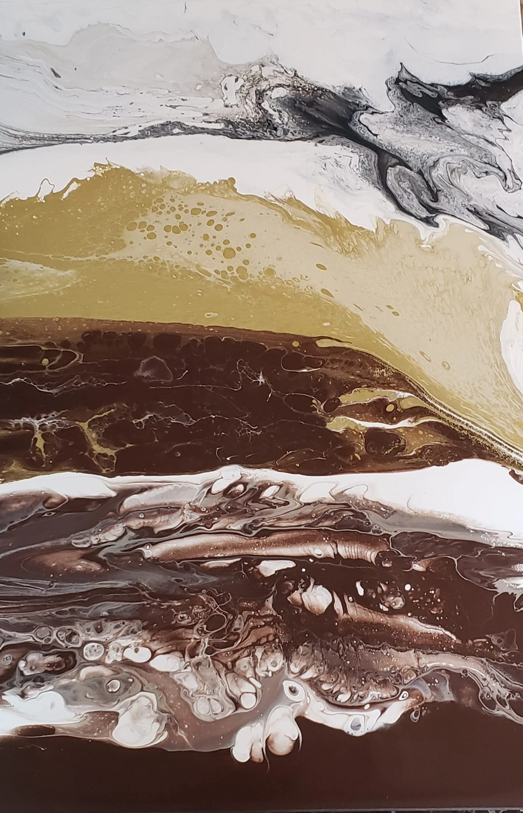
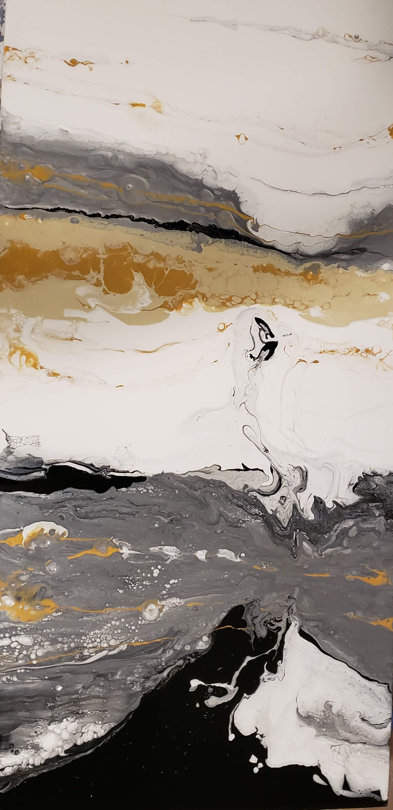
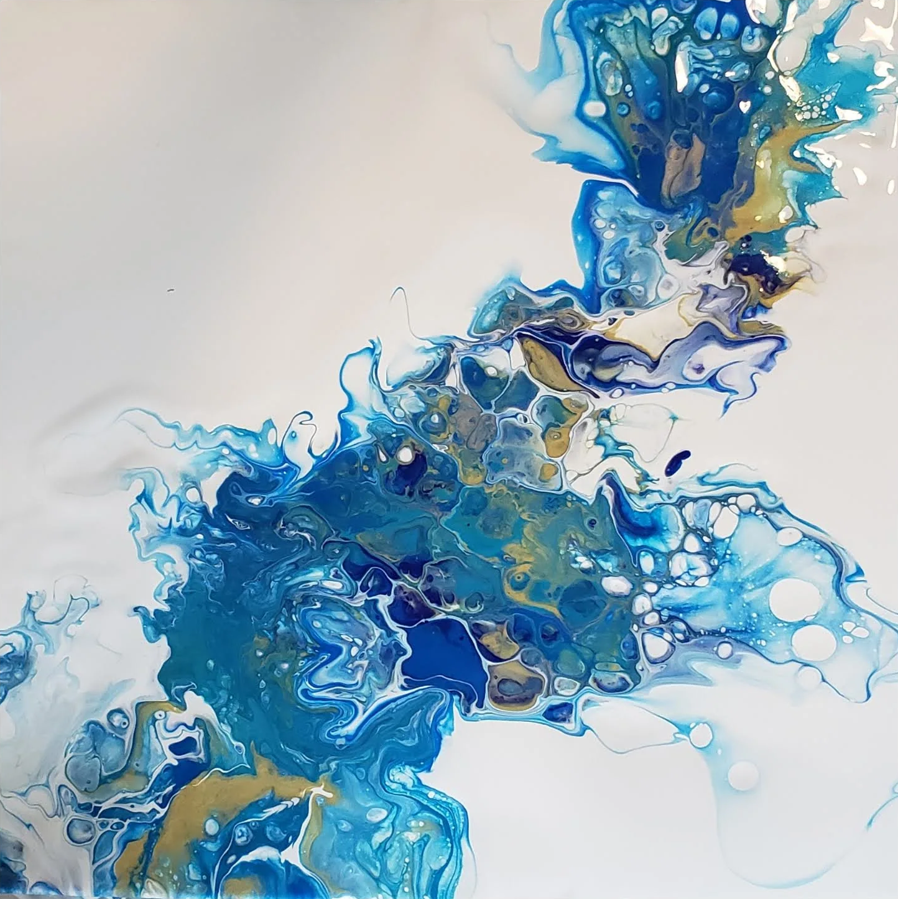
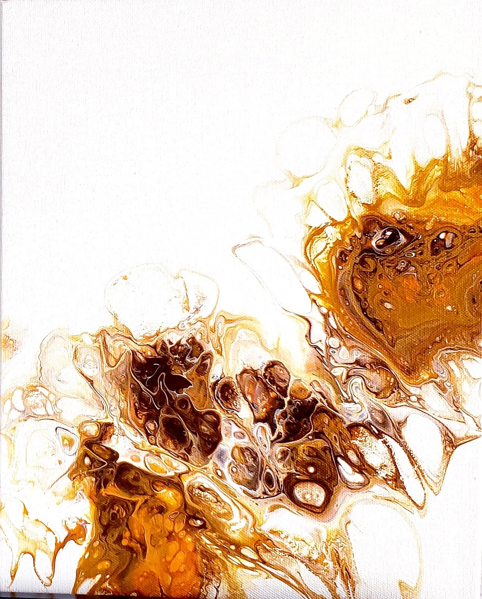
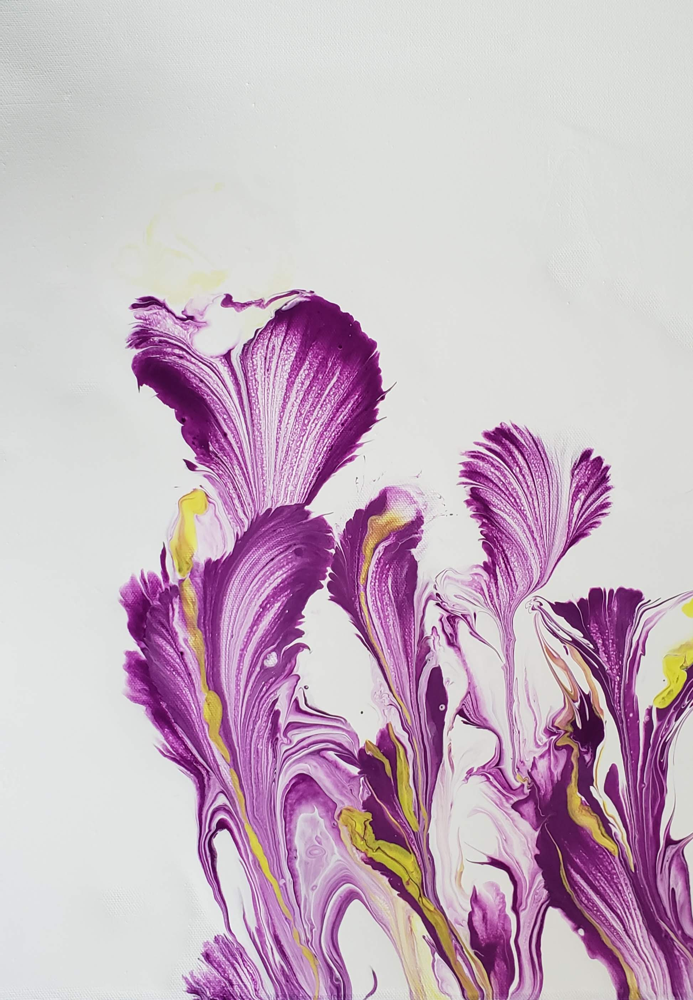
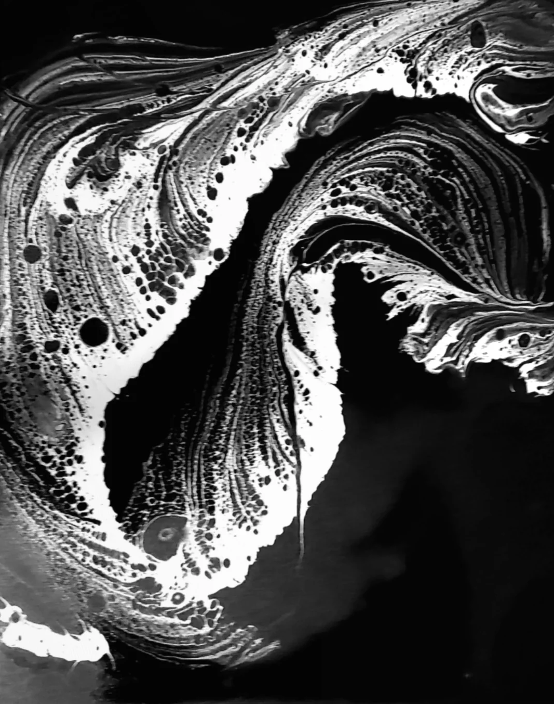

Ranjeeta Shroff
Artist behind Zita’s Art Studio
A creative journey
Creativity has always been a part of who I am. From a young age, I’ve been drawn to exploring different art forms, experimenting with materials, and discovering new ways to express myself.
For me, art is more than something I create. It is a reflection of who I am in a particular moment — my thoughts, emotions, experiences, and the ways I continue to grow and evolve, both as an artist and as a person.
My artistic journey has never followed a single path.
And perhaps that is what I love most about it.
An evolving practice
Over the years, I’ve explored many forms of artistic expression, including spending nearly six years working with glass, particularly fused glass.
After my son was born, I found my way back to painting. I began experimenting with different mediums and techniques, allowing curiosity to guide me.
It was during this exploration that I discovered fluid painting — and something about it captivated me.

The beauty of unpredictability
What draws me to fluid painting is its unpredictability.
I love watching colors move across the canvas, blending, separating, and creating unexpected forms. There is something fascinating about working with a composition while the paint is still flowing, responding to its movement rather than trying to control every detail.
Each painting becomes a balance between intention and spontaneity.
The energy, vibrancy, and constantly changing nature of this process continue to inspire me. No two experiences are quite the same, and there is always something new to discover.
Inspired by nature
Nature is at the heart of much of my abstract work.
I find inspiration in the vastness of the sky, the depth of the ocean, the stillness of mountains, the movement of air, and the freshness of spring.



These elements often find their way into my paintings, not necessarily as literal landscapes, but as expressions of how I experience the world around me.
Some works emerge as bold florals, fiery orange skies, or restless ocean tides. Others reflect quieter moments — open stretches of sand, distant horizons, and the gentle meeting of earth and sky.

My paintings carry different emotions, just as we do.
Some are vibrant and full of energy; others invite stillness and reflection.
What art means to me

Through my work, I find myself returning to the abundance of nature and the nurturing forces in our lives.
Painting gives me space to reflect on gratitude, on respecting different perspectives, on finding strength through pain, and on the conscious choices we make as we move through life.
Color and movement become ways of exploring those thoughts and feelings, sometimes expressing what words cannot.
I don’t always know exactly where a painting will lead when I begin. I value that openness — the possibility of discovering something unexpected along the way.
An invitation
Thank you for being here and taking the time to explore my work.
Every painting holds a part of my journey, but I also believe art can mean something different to everyone who experiences it.
I hope something here speaks to you, sparks your curiosity, or simply gives you a moment to pause and feel.
— Ranjeeta